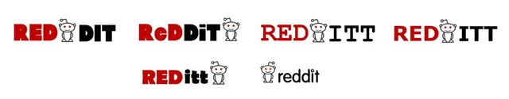

Historie sociální sítě
Komunity, diskuse a sdílení odkazů
- Rok založení
- 2005
- Zakladatelé
- Steve Huffman, Alexis Ohanian a Aaron Swartz
Vývoj loga Redditu

Od studentského projektu k online komunitám
Reddit založili Steve Huffman a Alexis Ohanian v roce 2005 jako projekt na univerzitním podnikatelském programu. K týmu se později připojil Aaron Swartz. Uživatelé na Redditu sdílejí odkazy, příspěvky a otázky a společně o nich diskutují v tematických komunitách zvaných subreddity.
Hlasování a vznik subredditů
Reddit začal jako jednoduchý seznam odkazů, o kterých mohli uživatelé hlasovat. Příspěvky s větší podporou se posouvaly výše, takže komunita spoluurčovala, co bude vidět. Z hlasování a komentářů postupně vyrostl web zaměřený nejen na odkazy, ale také na otázky, příběhy, obrázky a dlouhé diskuse.
Tematické komunity zvané subreddity umožnily rozdělit platformu podle zájmů. Každá má vlastní pravidla a dobrovolné moderátory, kteří dohlížejí na příspěvky a diskusi. Formát „Ask Me Anything“ zase propojil uživatele s odborníky, umělci, politiky i dalšími veřejně známými osobnostmi.
Komunita a proměny platformy
Reddit si vybudoval osobitý styl komunikace, vlastní humor a komunitní tradice. Uživatelé mohou vystupovat pod přezdívkami a sdílet zkušenosti v úzce zaměřených skupinách, které často vytvářejí vlastní slovník i normy. Platforma proto funguje současně jako diskusní fórum, katalog odkazů a síť specializovaných komunit.
V průběhu let se měnilo rozhraní webu, mobilní aplikace i možnosti moderování. V roce 2024 Reddit vstoupil na burzu. Změny přístupu k aplikačnímu rozhraní a využívání veřejných příspěvků pro trénování umělé inteligence vyvolaly diskuse o vztahu mezi platformou, jejími uživateli a vývojáři třetích stran.
Klíčové milníky
-
2005 · Založení Redditu
Steve Huffman a Alexis Ohanian spustili Reddit jako jednoduchý web pro sdílení a hodnocení odkazů.
-
2006 · Akvizice společností Condé Nast
Reddit koupila mediální společnost Condé Nast. V roce 2011 se Reddit osamostatnil jako samostatná společnost.
-
Rozvoj subredditů a komunit
Tematické komunity umožnily uživatelům vytvářet prostor pro diskuse o konkrétních zájmech a spravovat je podle vlastních pravidel.
-
2024 · Vstup na burzu
Reddit vstoupil na newyorskou burzu pod symbolem RDDT.
Vliv na společnost
Reddit dal vzniknout rozsáhlé síti komunit, kde lidé sdílejí zkušenosti, hledají rady a diskutují o tématech od každodenního života po vědu a technologie. Hlasování uživatelů ovlivňuje, které příspěvky se v jednotlivých komunitách zobrazují nejvýše.